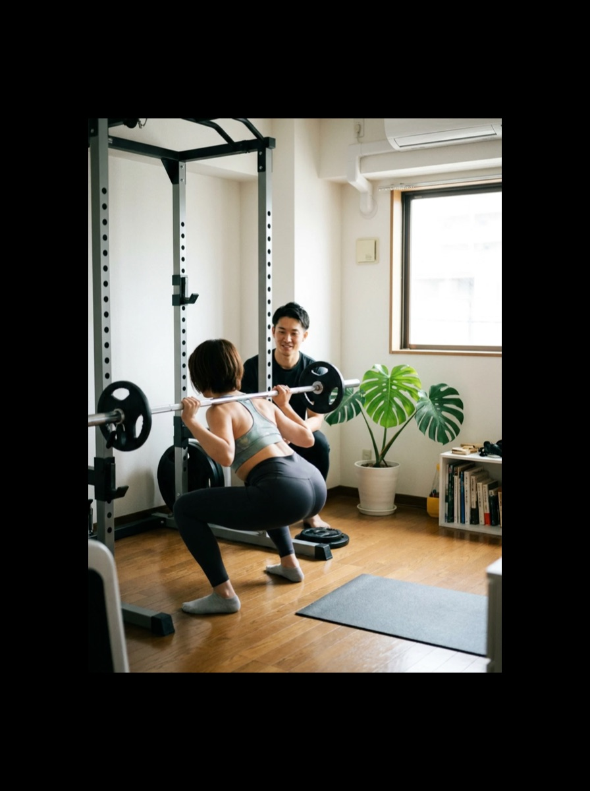
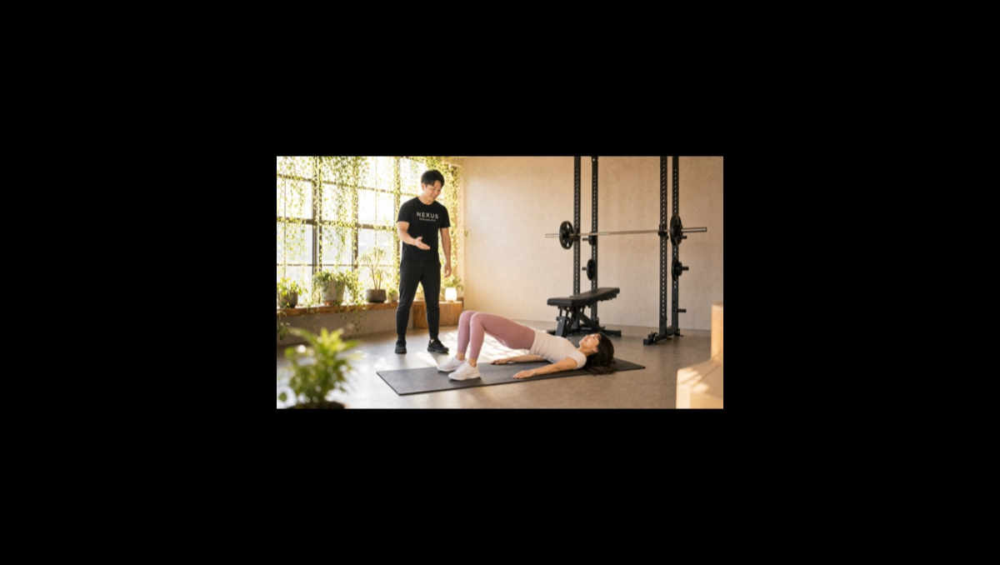
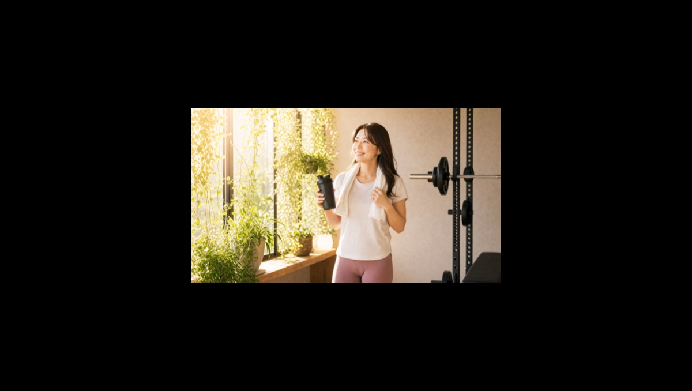
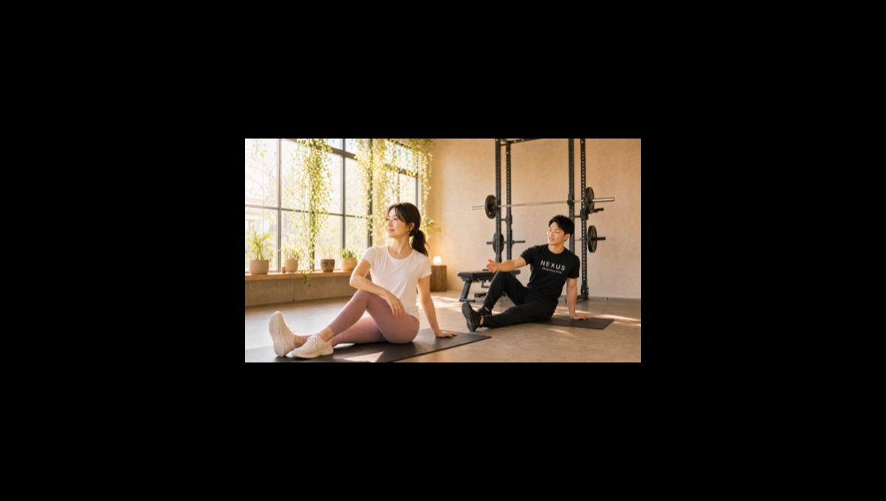
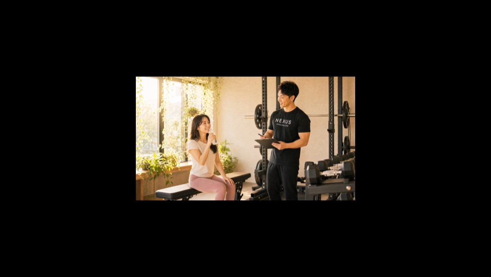

NEXUS Personal Gym ／ 大阪府豊中市
NEXUSパーソナルジム 大阪服部天神店｜服部天神の完全個室・隠れ家ジム
阪急宝塚線 服部天神駅からすぐ、豊中市服部南町の完全個室パーソナルジムです。「24時間ジムで続かなかった人の、仕事帰りの再挑戦」を軸に、安い月会費を払い続けたまま行かなくなってしまった方の「今度こそ」をマンツーマンで後押し。30代で3ヶ月−10kgといった実例もあり、仕事帰りに通える続けやすさが支持され、Google口コミ★4.9（65件）をいただいています。
- ブライダル対応
- 完全個室
- 仕事帰りの再挑戦
- マンツーマン指導
- 阪急宝塚線 服部天神駅
- 毎日8:00〜23:00

この店舗の特徴
NEXUS大阪服部天神店は、阪急宝塚線 服部天神駅近く・豊中市服部南町にある完全個室パーソナルジム。この店舗が向き合っているのは、「24時間ジムに入ったものの、行かなくなってしまった」という方の再挑戦です。月会費の安いジムは、いつでも行ける代わりに「何をすればいいか分からない」「誰も見ていないからサボってしまう」という壁があります。服部天神店では、マンツーマンでメニューを組み、その日の体調に合わせて声をかけ、自宅でのトレーニング方法まで伝えます。だから、一人では続かなかった方も続けられる。毎日8:00〜23:00営業で仕事帰りにも通いやすく、ウェア・タオル・プロテインまで無料の手ぶら通いOK。料金は1回4,500円〜（ライトコース30分・月4回18,000円）から始められます。
24時間ジム、行かなくなっていませんか

「安いから」と24時間ジムに入ったものの、最初の数回で足が遠のき、月会費だけを払い続けている——そんな経験はありませんか。服部天神店の口コミには「24時間ジムでは続かなかったが、パーソナルなら続くかもと入会した。自宅トレの方法まで教わり、モチベーションが上がっている」という声があります。続かなかったのは、あなたの意志が弱いからではありません。やり方が分からず、見てくれる人もいなかっただけです。マンツーマンなら、正しいフォーム、効かせ方、そして「今日も来てよかった」と思える声かけがあります。行かないジムの月会費を払い続けるより、結果の出る投資に切り替える——その一歩を、服部天神店が支えます。
24時間ジムでは続かなかったのですが、優しく楽しいトレーナーのおかげで安心して通えています。自宅でのトレーニング方法まで教わりました。
仕事帰りの1時間が、いちばん変わる

体を変えるのに、特別な休日は要りません。仕事帰りの1時間——それがいちばん続けやすく、いちばん変わる時間です。服部天神店の口コミには「仕事帰りに通える場所を探していた。疲れた日も、トレーナーの声かけで自然と頑張れる」という声があります。毎日23時まで営業しているので、残業があっても間に合います。ウェア・タオル・プロテインまで無料提供の手ぶら通いOKだから、会社帰りにバッグひとつで立ち寄れます。「今日は疲れたから」と流れてしまいがちな夜も、予約とトレーナーの声かけがあれば、自然と足が向く。その積み重ねが、確かな変化になります。
疲れた仕事帰りでも、その日に合わせたメニューと励ましで自然と続き、体力がついて仕事の調子まで上がりました。
30代・40代の代謝の壁を越える
「若い頃と同じ生活なのに、なぜか太る」——それは、加齢とともに基礎代謝が落ちるためです。30代・40代になると、放っておくだけで少しずつ体重が増え、疲れも抜けにくくなります。服部天神店の口コミには「30代で太り、3ヶ月で10kg減った」という実例や、「40代になり同じ生活でも太るようになったが、年齢と体力に合わせた無理のないプログラムで安心できた」という声があります。大切なのは、若い頃のような無茶な追い込みではなく、今の年齢と体力に合った負荷で、筋肉を戻し代謝を上げていくこと。マンツーマンだからこそ、あなたの体の状態を見ながら、ケガをせず着実に「太りにくい体」へと変えていけます。食事も、極端な制限ではなく続けられる形で整えます。代謝の壁は、正しい方法なら何歳からでも越えられます。
“足の神様”の街で、足腰から健康に

服部天神といえば、古くから「足の神様」として親しまれる服部天神宮のお膝元。足腰の健康や旅の安全を祈願する人が全国から訪れる街です。その土地で体づくりをするなら、ぜひ大切にしてほしいのが「一生歩ける足腰」です。人の筋肉は下半身に約7割が集まっており、脚を鍛えることは代謝アップにも、将来の転倒予防にも直結します。服部天神店では、スクワットやヒップリフトなど下半身を軸にしたトレーニングで、太りにくい体と、いつまでも自分の足で歩ける体の両方を育てます。“足の神様”の街で、足腰から健康になる——服部天神店ならではの体づくりです。
セッションの流れ

初めての方は、まず無料体験へ。ご予約後、来店したらカウンセリングで目標や現在の体型、生活リズム、これまでのジム経験（続かなかった理由も含めて）をうかがいます。そのうえで実際のトレーニングを体験し、フォームや効かせ方を確かめていただきます。完全個室なので、体型やトレーニング姿を人に見られる心配はありません。相性や雰囲気を確かめてから決めていただけるので、当日入会で入会金が通常55,000円→15,000円（税込）に割引。無理な勧誘は一切ありません。阪急宝塚線 服部天神駅すぐなので、仕事帰りに、まずは話だけでも気軽にお越しください。
結婚式前のボディメイクを、大阪服部天神で

「ドレスの試着で二の腕が気になった」「背中の開いたデザインを、体型を理由に諦めたくない」——挙式という動かせない期日があるからこそ、ボディメイクは最後までやり切れます。大阪服部天神店では、まず挙式日とドレスのデザインをうかがい、背中・二の腕・デコルテ・ウエストという、ドレスでもっとも視線が集まる部位から優先順位をつけていきます。完全個室のマンツーマンだから、人目を気にせず自分の身体とだけ向き合えます。

残された日数によって、やるべきことは変わります。大阪服部天神店では挙式日から逆算した90日プラン・60日プランを用意し、「いつまでに、どの部位を、どこまで」を最初に設計します。極端な食事制限で当日フラフラ……ということがないよう、その日のコンディションから逆算する無理のない指導で、式当日にピークを合わせます。会員の約85%が女性で、ブライダルのご相談は日常的。体に不必要に触れないノータッチ指導を基本にしているので、はじめての方も安心です。

週を追うごとに、ドレスの試着で鏡に映る自分が変わっていきます。背中がすっと伸び、二の腕のたるみが引き締まり、デコルテに華やかさが出る。「このデザインで大丈夫かな」から「このドレスを選んでよかった」へ——目標が数字ではなく“当日の自分の姿”だからこそ、モチベーションが途切れません。大阪服部天神エリアで挙式を予定されている方は、エリア内の式場への下見や打ち合わせの動線に、そのままトレーニングを組み込めます。

迎えた挙式当日。積み重ねた90日・60日は、鏡の前の安心感になって返ってきます。姿勢よく背筋を伸ばして立ち、写真のどの角度でも堂々といられる——それは、頑張ってきた自分だけが手にできる自信です。大阪服部天神店は、その一日のために全力で伴走します。

挙式は、新しい生活のスタートでもあります。せっかく作り上げた身体を、そのまま新生活の習慣に。大阪服部天神店は毎日8:00〜23:00営業・月4回18,000円（1回4,500円〜）から続けられるので、挙式後の体型維持から、将来の産後の体型戻しまで長く伴走できます。全国約70店舗のネットワークがあるため、引っ越しや里帰りの際も最寄り店舗へ。「一生に一度」のために始めた習慣が、その後の人生を支える土台になります。
挙式まで残り80日で駆け込みました。背中の開いたドレスに合わせて、二の腕と背中を中心にプランを組んでもらい、当日は自信を持って写真に写れました。式後もそのまま通っています。
上記はサービス内容をわかりやすく伝えるためのモデルケース（イメージ）であり、実在するお客様の口コミではありません。Google口コミは本ページ内の該当セクションに実際の内容を要約して掲載しています。
挙式日からの逆算タイムライン｜ブライダル専用ページを見る料金プラン
入会金は通常55,000円、無料体験当日入会で15,000円（税込）に割引。AI食事指導は月額3,000円（税込）。全店舗共通の料金です。
アクセス
- 店舗名
- NEXUSパーソナルジム 大阪服部天神店
- 住所
- 〒561-0853
大阪府豊中市服部南町1-5-6 クレセント南町103号 - 最寄り駅
- 阪急宝塚線 服部天神駅
- 営業時間
- 毎日 8:00〜23:00
- 電話番号
- 050-1790-8496
Google口コミ★4.9（65件）
NEXUS大阪服部天神店はGoogle口コミ★4.9・65件。24時間ジムで続かなかった方の再挑戦と、仕事帰りに通える続けやすさが評価されています。
※お客様の声はGoogle口コミの内容を要約して掲載しています。出典：Google マップ
30代で増えた体重が3ヶ月で10kg減りました。食事の見直しからトレーニングまで、ストレスなく続けられたのが良かったです。
大阪服部天神店のよくある質問
Q服部天神で仕事帰りに通えるパーソナルジムはありますか？+
Q24時間ジムが続きませんでした。それでも変われますか？+
Q豊中店・曽根店との違いは何ですか？+
Q挙式まで3ヶ月ですが、結婚式に間に合いますか？+
Qドレスで気になる背中や二の腕を集中的に絞れますか？+
Q結婚式が終わった後も通い続けられますか？+
よくある質問（全店共通）
料金・制度などNEXUS全店に共通するご質問です。さらに詳しくは110問のFAQをご覧ください。
Q料金はいくらですか？+
Q手ぶらで通えますか？+
Qキャンセルはいつまでできますか？+
Q食事指導はありますか？+
Qトレーナーはどんな人ですか？+
NEXUSパーソナルジム公式サイトを見る